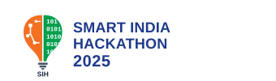
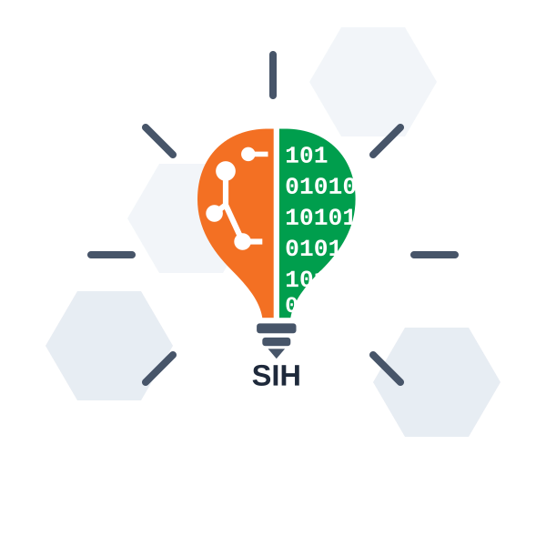

| Architectural Layer | Technologies, Frameworks & Verified Implementations |
|---|---|
| 📱 Frontend Client | React 18 + TypeScript + Vite + Tailwind CSS + Capacitor — Native Android Mobile App, large 48px touch targets, Digital India BHASHINI Voice AI in 10 Indic languages. |
| ⚡ Core Backend API | Python 3.11 + FastAPI (Async) + Pydantic v2 + SQLAlchemy — 12 Production REST Endpoints, strict JSON schemas, SQLite & PostgreSQL resilience. |
| 🤖 Predictive AI/ML | XGBoost Regressor (Primary Yield: R² = 0.9907, RMSE = 0.397 qtl/ac) + Mandi Price Forecaster (R² = 0.8456 trained on 14,786 real transactions). |
| 🧠 Agronomic Engines | ICAR Sowing Window Delay Attenuation Curves + Crop Rotation Scorer + Explainable Reasoning Generator + Real-Time "What-If" Sensitivity Simulator. |
| 💾 Data Warehousing | 100% Authentic Government Data: ICRISAT 10-Yr Yield Panel, Agmarknet 2021–2025 Mandi Prices, CACP A₂+FL Cost Norms, ISRIC SoilGrids 250m GIS. |